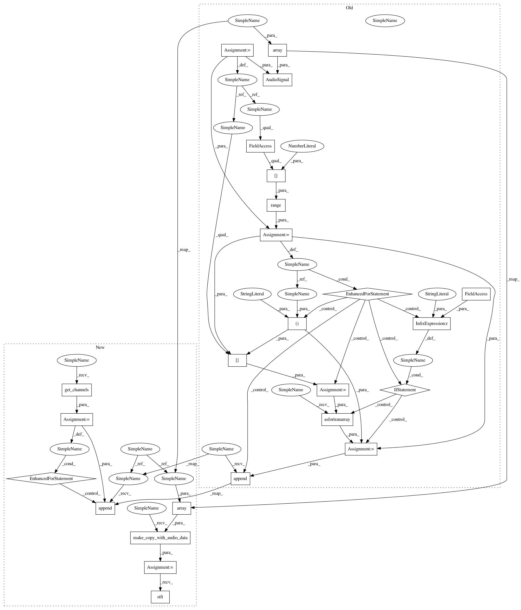

889a295c5c4e0c1cf344e49f2020917a410f64d1,nussl/core/augmentation.py,,pitch_shift,#,104
Before Change
sample_rate = signal.sample_rate
shifted_source = []
audio_data = signal.audio_data
for row in range(audio_data.shape[0]):
audio_row = audio_data[row, :]
if librosa.__version__ > "0.6.2":
audio_row = np.asfortranarray(audio_row)
shifted_source.append(librosa.effects.pitch_shift(audio_row, sample_rate, shift))
shifted_signal = AudioSignal(audio_data_array=np.array(shifted_source), sample_rate=sample_rate)
return shifted_signal
def loudness_scale(item, factor_range):
After Change
raise ValueError("shift must be an integer.")
sample_rate = audio_signal.sample_rate
shifted_audio_data = []
audio_data = audio_signal.audio_data
for audio_row in audio_signal.get_channels():
shifted_audio_data.append(librosa.effects.pitch_shift(audio_row, sample_rate, shift))
shifted_audio_data = np.array(shifted_audio_data)
shifted_signal = audio_signal.make_copy_with_audio_data(shifted_audio_data)
shifted_signal.stft()
return shifted_signal
def low_pass(audio_signal, highest_freq):
In pattern: SUPERPATTERN
Frequency: 3
Non-data size: 25
Instances
Project Name: interactiveaudiolab/nussl
Commit Name: 889a295c5c4e0c1cf344e49f2020917a410f64d1
Time: 2020-05-03
Author: abugler@gmail.com
File Name: nussl/core/augmentation.py
Class Name:
Method Name: pitch_shift
Project Name: interactiveaudiolab/nussl
Commit Name: 889a295c5c4e0c1cf344e49f2020917a410f64d1
Time: 2020-05-03
Author: abugler@gmail.com
File Name: nussl/core/augmentation.py
Class Name:
Method Name: time_stretch
Project Name: interactiveaudiolab/nussl
Commit Name: ceb4e40c074d2f0d0bde8e97c7b4493971281a9b
Time: 2020-05-14
Author: abugler@gmail.com
File Name: nussl/core/augmentation.py
Class Name:
Method Name: time_stretch